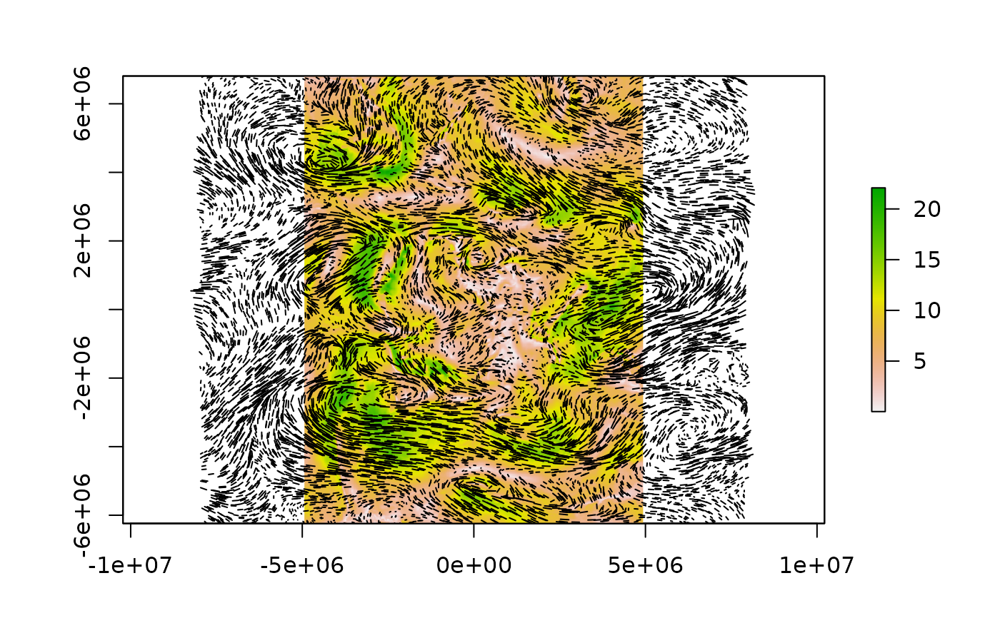

Read from The Antarctic Mesoscale Prediction System (AMPS) files.
readamps_d1wind(date, time.resolution = "4hourly", xylim = NULL, magonly = FALSE, dironly = FALSE, uonly = FALSE, vonly = FALSE, latest = FALSE, returnfiles = FALSE, level = 1, ..., inputfiles = NULL) readamps(date, time.resolution = "4hourly", xylim = NULL, band = 1, latest = FALSE, returnfiles = FALSE, ..., inputfiles = NULL)
| date | date or dates of data to read, see Details |
|---|---|
| time.resolution | time resolution to read |
| xylim | crop |
| magonly | return just the magnitude from the U and V components |
| dironly | return just the direction from the U and V, in degrees N=0, E=90, S=180, W=270 |
| uonly | return just the horizontal component of velocity, U |
| vonly | return just the vertical component of velocity, V |
| latest | if TRUE return the latest time available, ignoring the 'date' argument |
| returnfiles | ignore options and just return the file names and dates |
| ... | arguments passed to |
| inputfiles | input the files data base to speed up initialization |
Raster
readamps_d1wind reads the "d1" level wind (defaults to 1).
readamps reads the band (defaults to 1).
See amps_metadata for a description of the bands.
Data http://www2.mmm.ucar.edu/rt/amps/wrf_grib/, and contain gridded forecast data from the AMPS-WRF model. The ‘d1’ (domain 1) files are on a 30km grid, while the ‘d2’ (domain 2) files are on a 10km grid. The grid domains are shown at http://polarmet.osu.edu/AMPS/ - d2 extends out to southern Australia and the tip of South America, and d1 covers just Antarctica (including Davis) and parts of the Southern Ocean. There are two forecast cycles, starting at 00UT and 12UT daily. Forecasts are for +00, +03, +06, +09, +12 and +15 hours. These steps can be used to see how the wind field is forecast as changing, and to obtain two different data sets each 3 hour timestep (e.g. the +15h forecast for the 00UT run is at the same time as the +03h forecast from the 12UT run). The 00UT and 12UT runs contain fewer parameters that the +03h and later forecasts
An example file date is "2015-10-25 UTC"
gdalinfo 2015102512_WRF_d1_f000.grb
uonly is
Band 5 Block=329x1 Type=Float64, ColorInterp=Undefined
Description = 10[m] HTGL (Specified height level above ground)
Metadata:
GRIB_COMMENT=u-component of wind [m/s]
GRIB_ELEMENT=UGRD
GRIB_FORECAST_SECONDS=0 sec
GRIB_REF_TIME= 1445774400 sec UTC
GRIB_SHORT_NAME=10-HTGL
GRIB_UNIT=[m/s]
GRIB_VALID_TIME= 1445774400 sec UTC
vonly is
Band 27 Block=329x1 Type=Float64, ColorInterp=Undefined
Description = 10[m] HTGL (Specified height level above ground)
Metadata:
GRIB_COMMENT=v-component of wind [m/s]
GRIB_ELEMENT=VGRD
GRIB_FORECAST_SECONDS=0 sec
GRIB_REF_TIME= 1445774400 sec UTC
GRIB_SHORT_NAME=10-HTGL
GRIB_UNIT=[m/s]
GRIB_VALID_TIME= 1445774400 sec UTC
af <- amps_d1files() w <- readamps_d1wind(latest = TRUE, inputfiles = af) vlen <- function(a, b) sqrt(a * a + b * b) plot(vlen(w[[1]], w[[2]]))## arrow jigger arr <- function(x, sub = seq(ncell(x[[1]])), scale = 1) { cr <- coordinates(x[[1]]); cr1 <- cr; cr1[,1] <- cr[,1] + values(x[[1]])*scale; cr1[,2] <- cr1[,2] + values(x[[2]]*scale); segments(cr[sub,1], cr[sub,2], cr1[sub,1], cr1[sub,2]) } arr(w, sample(ncell(w), 10000), scale = 30000)